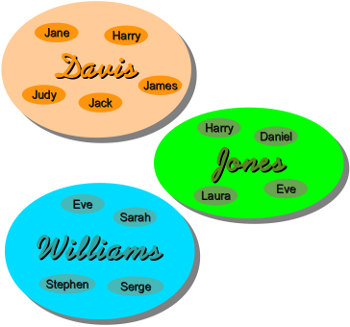

Namespaces and Scopes
Namespaces

Generally speaking, a namespace (sometimes also called a context) is a naming system
for making names unique to avoid ambiguity. Everybody knows a namespacing system from daily
life, i.e. the naming of people in firstname and familiy name (surname). Another example is
a network: each network device
(workstation, server, printer, ...) needs a unique name and address. Yet another example is the directory
structure of filesystems. The same filename can be used in different directories, the files can be
uniquely accessed via the pathnames.
Many programming languages use namespaces or contexts for identifiers. An identifier defined in a
namespace is associated with that namespace. This way, the same identifier can be independently
defined in multiple namespaces. (Like the same filenames in different directories)
Programming languages, which support namespaces may have different rules that determine to which
namespace an identifier belongs.
Namespaces in Python are implemented as Python dictionaries, this means that they are defined by a mapping from names, i.e. the keys of the dictionary, to objects, i.e. the values. The user doesn't have to know this to write a Python program and when
using namespaces.
Some namespaces in Python:
- global names of a module
- local names in a function or method invocation
- built-in names: this namespace contains built-in fuctions (e.g. abs(), cmp(), ...) and built-in exception names
Lifetime of a Namespace
Not every namespace, which may be used in a script or program is accessible (or alive) at any moment during the execution of the script. Namespaces have different lifetimes, because they are often created at different points in time. There is one namespace which is present from beginning to end: The namespace containing the built-in names is created when the Python interpreter starts up, and is never deleted. The global namespace of a module is generated when the module is read in. Module namespaces normally last until the script ends, i.e. the interpreter quits. When a function is called, a local namespace is created for this function. This namespace is deleted either if the function ends, i.e. returns, or if the function raises an exception, which is not dealt with within the function.Scopes
A scope refers to a region of a program where a namespace can be directly accessed, i.e. without using a namespace prefix. In other words: The scope of a name is the area of a program where this name can be unambiguously used, for example inside of a function. A name's namespace is identical to it's scope. Scopes are defined statically, but they are used dynamically.During program execution there are the following nested scopes available:
- the innermost scope is searched first and it contains the local names
- the scopes of any enclosing functions, which are searched starting with the nearest enclosing scope
- the next-to-last scope contains the current module's global names
- the outermost scope, which is searched last, is the namespace containing the built-in names